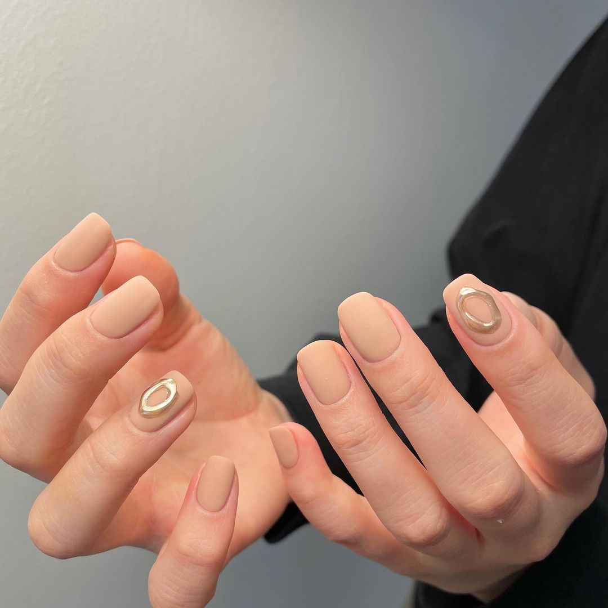

Nail công sở không chỉ là việc chăm sóc đôi tay mà còn là cách thể hiện sự chuyên nghiệp, tinh tế và khéo léo trong công việc. Tại Nailistas, chúng tôi hiểu rằng trong môi trường công sở, sự chỉn chu là điều quan trọng, nhưng không phải vì vậy mà bạn phải hy sinh sự sáng tạo. Nail công sở tại Nailistas được thiết kế để phù hợp với không gian làm việc, tạo ra một vẻ ngoài trang nhã, nhẹ nhàng mà vẫn không kém phần nổi bật.
Các bộ móng công sở tại Nailistas luôn được thiết kế với các tông màu nhẹ nhàng, thanh thoát, tạo sự tinh tế mà không làm mất đi vẻ đẹp tự nhiên của đôi tay. Những màu sơn pastel, nude, hồng nhạt, và màu be thường xuyên được lựa chọn cho phong cách này, vì chúng không quá nổi bật nhưng vẫn tạo cảm giác tươi mới và dễ chịu. Các thiết kế không cầu kỳ mà thường hướng tới sự đơn giản, dễ dàng trong việc phối hợp với trang phục công sở hàng ngày.
Nailistas cam kết mang đến những bộ móng phù hợp với từng nhu cầu của khách hàng, từ những bộ móng trơn màu nhẹ nhàng đến những bộ móng đơn giản với các chi tiết trang trí nhẹ nhàng như các đường kẻ mảnh hoặc họa tiết nhỏ. Chúng tôi luôn tuân thủ nguyên tắc không làm móng quá dài hay quá cầu kỳ, tránh gây sự chú ý quá mức trong môi trường công sở, đồng thời đảm bảo bộ móng vẫn phải thể hiện sự sáng tạo, phong cách và cá tính riêng.
Mỗi bộ móng công sở tại Nailistas không chỉ là sự kết hợp giữa màu sắc mà còn là sự kết hợp hoàn hảo với phong cách thời trang của từng khách hàng. Chúng tôi luôn chú trọng đến việc tạo nên sự hài hòa giữa màu sắc móng và trang phục công sở, giúp khách hàng cảm thấy tự tin và chuyên nghiệp hơn mỗi khi bước vào nơi làm việc. Với Nailistas, mỗi bộ móng không chỉ là một tác phẩm nghệ thuật mà là một phần không thể thiếu trong diện mạo công sở hoàn hảo.
Đặc biệt, Nailistas luôn cung cấp các dịch vụ chăm sóc móng công sở với các loại sơn chất lượng cao, bền lâu, giúp bạn không cần lo lắng về việc móng bị xước hay mất màu sau vài ngày làm việc. Chúng tôi cũng chú trọng đến việc tạo ra một không gian thư giãn tuyệt vời, nơi bạn có thể vừa làm đẹp cho đôi tay vừa tận hưởng những phút giây thư thái giữa bộn bề công việc.
Không chỉ dừng lại ở các màu sắc nhẹ nhàng, Nailistas cũng liên tục cập nhật những xu hướng nail mới nhất, mang đến cho khách hàng những bộ móng công sở thời thượng, phù hợp với xu hướng hiện đại mà vẫn giữ được vẻ đẹp tinh tế và trang nhã. Chúng tôi tạo ra những bộ móng đơn giản nhưng vẫn đầy ấn tượng, giúp bạn tự tin thể hiện cá tính mà không làm mất đi sự lịch sự trong môi trường công sở.
Với Nailistas, việc làm đẹp không chỉ là để chăm sóc bản thân mà còn là cách thể hiện phong cách sống, sự tự tin và quyết đoán trong công việc. Nail công sở chính là sự hòa quyện giữa sự chuyên nghiệp và sự sáng tạo, giúp bạn tỏa sáng trong công việc mà vẫn giữ được phong thái thanh lịch và trưởng thành.
Chúng tôi hiểu rằng mỗi người có một phong cách làm việc khác nhau, và chúng tôi luôn sẵn sàng mang đến những giải pháp làm đẹp phù hợp nhất cho từng khách hàng. Tại Nailistas, mỗi bộ móng công sở là một lời cam kết về chất lượng, sự chuyên nghiệp và sự chăm sóc tận tình đối với từng khách hàng của mình.